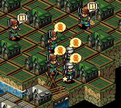
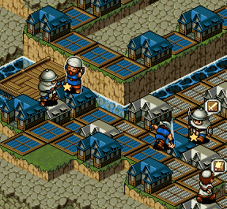
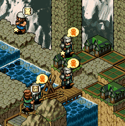
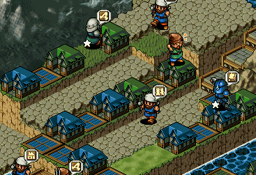

| 概要 | 情報 | ステージ攻略 |
| 地図 | テクニック | モナモナ攻略へ |
|  始めのステージなので、いっさい指示を出さなくとも勝てます。 まず、ゲーム開始直後に白の領土へ続く橋の上に柵を作ってください。DFは1で構いません。 そして、白が赤を圧倒し、青へ攻め込むまで兵力を蓄えます。このとき、どのユニットも体重が2000を越えないように調整するといいかもしれません。  白が赤を倒し、青の領土へ攻め込んだら、柵を破壊し自国のユニットを移動させます。この時、体重が4000程度のユニットが3体用意できれば何とかなります。 素早く白の城周辺を征服し、城を破壊して一気に領土を拡張します。  そのころには、青の城がある島(?)まで白が到達しているはずなので、青の領土をうまく制圧し占領率100%を狙ってください。上の画像のように青のユニットがマップのすみへ逃げてくれると、占領率100%は簡単に狙えるのですが、逃げてくれない場合は頭を使ってください。  もし白を制圧した時、この地点を制圧しきれていない場合は、ユニットに細かく指示を出してください。そうしないと、予想以上に時間を浪費します。 |
| 概要 | 情報 | ステージ攻略 |
| 地図 | テクニック | モナモナ攻略へ |